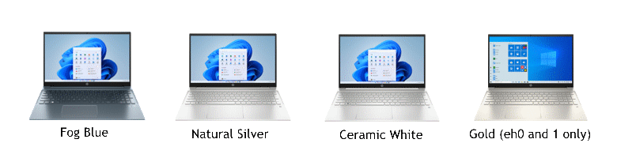

HP Pavilion 15(z)-eh Owner's Guide
Originally written February 13, 2023.
An overlooked series of consumer-grade laptops that aren't what your grandma gets you for christmas at age 9.
Pictured: Color options for the EH chassis. There is a teal option but I cannot find an image for it, though it has been mentioned in older service manuals.
Overview of the System
The HP Pavilion 15z-eh series of laptops are AMD-based notebook computers that have been sold since November 2020 and have been through 2 refreshes as of writing this. The first models, the eh000, came with Ryzen 4000U series processors based on the Zen 2 architecture. The eh100 models came with 5000 series processors based on the Zen 2 architecture. The latest model, the eh200 series, comes with the 5625U and 5825U Ryzen processors based on Zen 3. These have 2 DDR4 RAM slots, for an official maximum of 16GB, or a more sensible unofficial maximum of either 32GB or 64GB depending on what your processor can support. They have NVMe storage drives which can run at PCI Express v3.0 at 4x speed. Earlier models likely came with mechanical hard drives, but the eh200's structure (which is similar to the earlier models) does not have motherboard provisions or a space for a 2.5" mechanical disk. These laptops come with LED or WLED(white LED)-backlit displays that can be configured to order at 1366x768 (WHY?) and 1920x1080. The latter is the recommended option if you are configuring one to order. There is also a touchscreen option for the 1080p screen, which is useful for, well... touch operations. These laptops have a backlit scissor-switch keyboard with a numpad on the side. This laptop has 2 USB 3.0 ports (1 on each side), 1 USB-C port (which is also capable of fast-charging for devices), a full-size high-definition AV (HDMI) port, a kensington lock slot, and the infamous HP blue-barrel power jack on the right side. This laptop does not have an RJ45 port for 10/100/1000 Ethernet, so you are unable to connect unless you use a USB to RJ45 (Ethernet) adapter.
These laptops came with Windows 10 or 11 depending on which one you bought. While Windows 10 came with earlier models, you were only able to get Windows 11 with later eh1 and all eh2 models. However, it is possible to downgrade to Windows 10 version 22H2 with no issues. In my personal experience using Windows 10 22H2 on an eh200, I have not had any issues with drivers. There is a very high chance that any distribution of GNU+Linux, such as Debian or Arch to name a couple, will work when configured properly. This laptop does not have the option to use S3 suspend, however I may dig into UEFI variables and find a way to enable it. I haven't had an issue with the modern sleep on this laptop like I did with an Acer Aspire A515, which kept overheating and draining its battery. Probably Intel things, I guess.
The Pavilion 15z-eh200 is still available to buy on HP's website and can be configured to order. I would recommend buying aftermarket RAM cards and an NVMe SSD to save money, and I will go into detail for that later on. Keep reading to know what parts will function best in this laptop, since there are certain SSDs that the HP BIOS does not particularly like.
Flaws of the system
Knowing this is a newer consumer-grade laptop, it is made of plastic and if heavily used, will start to fall apart. I don't particularly use mine every day, but I do use it often. HP has had an issue with swelling batteries in more recent laptops, but since 2020 or so, that has been remedied as HP has re-structured how they have made internal notebook batteries which has stopped that issue... thank god. The base models come with WD SN530 drives, which have been known to fail. A friend of mine has experienced a few SN530 failures in various systems he has worked on, and I'm sure that if it's an OEM drive, it wouldn't last long. I'm certain the base eh0 and eh1 models use the same (or similar) drive, so be sure to replace it if you're squeamish of failing hard drives/SSDs.
HP, being the FORD of computers (fix it again, tony!) I mean, (fix or repair daily), is known to use rather barren BIOS/UEFI firmware. I have had issues getting a Samsung 970 EVO PLUS NVMe drive to work properly on this computer. The internal diagnostics don't help much, either. The short DST test gave me a "warning" even though it didn't even attempt to run the test on that drive. I tried to see if a Micron 2300 SSD would work, but sometimes the computer will throw a 3F0 error meaning that no hard drive is installed. It is an older SSD, so chances are it is unaware of the new sleep mode these laptops have. TL;DR: This laptop is apparently very picky about what drive you install. Personally, I have used a WD SN770 and I have had NO issues with it. It sleeps, it passes DST diagnostics, and it never crashes. I've only had one crash so far but that's because Windows 11 22H2 (which I'm going to downgrade back to 10 22H2 soon after i finish this original writing) just thought I broke a file. The eh000 likely supports S3 sleep out of the box, so the Micron 2300 may work better under that system. However, those aren't particularly good and I'd just get the WD SN770. More on that later...
Maintenance level
Luckily, since there are NO moving parts aside from the fan in this computer, maintenance levels are very low. The processor has a nice, large heatsink, so the fans don't kick on very often. I'm relieved that HP has finally learned from their infamous "mini-singular heatpipe arc" with a lot of their newer laptops, and went with something that has dramatically improved thermal performance. It is an all-copper heatsink with 2 thick heatpipes and a long exhaust. My gripe is how the CPU is exhausting its heat, which is out the vents near the hinge cover. Luckily the processor does not generate too much heat unless it's under high-load, which may cause an issue if you don't dust out your system. Dust depends on your environment; if it's very dusty, chances are your laptop is collecting the majority of that dust and would soon clog up the heatsink if you don't clean it often enough.
In order to clear any dust in this particular laptop, tilt your laptop screen to its maximum angle (in this case, around 120 degrees). Use a compressed air can with a small nozzle and blow into the vents on the right side parallel to the hinge cover.
 Do NOT use a vacuum! It generates static electricity and will potentially fry your laptop. Also, do NOT use a traditional compressed air can if it is ICE COLD! The chemicals may potentially cause corrosion/damage on the heatsink fins. The air vent on the bottom of the laptop is above where the fan is located, so dust that out too.
Do NOT use a vacuum! It generates static electricity and will potentially fry your laptop. Also, do NOT use a traditional compressed air can if it is ICE COLD! The chemicals may potentially cause corrosion/damage on the heatsink fins. The air vent on the bottom of the laptop is above where the fan is located, so dust that out too.
Processor upgrades
To most tech-savvy people, it's obvious. The CPU is soldered to the motherboard and cannot be upgraded by conventional means. However, not everyone is aware of this (especially if you see people asking about CPU upgrades on the HP support forum). Since around 2013-2015 when Haswell was introduced and then phased out for Skylake/Broadwell, CPU manufacturers stopped designing future PGA sockets for mobile computer applications, now relying on BGA processors for all manufacturing and laptop design. Don't let this discourage you, though. These laptops with removable CPUs are now at least 10 years old. Since Coffee Lake, Intel has managed to catch up with the highest-end Ivy Bridge and Haswell mobile processors. Now, according to several benchmarks (not userbenchmark), a mobile Ryzen 5 or 7 processor in any of these machines is about twice as fast as the best quad-core PGA mobile Core i7 processor ever made. HP can configure a CTO eh200 model with either a Ryzen 5 5625U or a Ryzen 7 5825U. I personally went with the R7 and it's been a super-fast computer. I believe the earlier models came with the 4500U and 4700U for the eh000. The eh100 had the 5500U and the 5700U.
Storage, RAM, Wi-Fi, and Power
While you can configure one of these laptops to order with more RAM and a larger SSD, it can be rather expensive compared to installing your own upgrades yourself. There are 2 #000 JIS screws on the bottom of the computer, and 4 #0 JIS screws, 2 under each of the rubber feet.
As mentioned before, modern HP laptops are very picky about what SSD they have. Usually, it would be wise to get something from the same manufacturer as the original OEM drive. I personally recommend the WD SN770 as it is a fast and cost-effective drive. I'm not sure if it's ever maxed out at PCIe 4.0 speeds, but it's very fast even under 3.0 and potentially more reliable than other 3.0 drives on the market.
The Renoir chips used in the eh000 laptops only support up to 32GB of DDR4-2666 SO-DIMM laptop memory. The Lucienne (eh100) and Cezanne (eh200) chips will support up to 64GB of DDR4-3200 SO-DIMM laptop memory. HP uses an unofficial maximum of 16GB, but I call BS. These laptops aren't from 2013 and are far more capable than supporting just that. It is likely that the eh000 series laptops can run 3200MHz RAM, but the BIOS may not recognize the high-speed memory due to its lack of options to configure XMP profiles/RAM clock speed. Personally, I have installed 32GB (2x16GB) of 3200MHz DDR4 RAM into my eh200 and it runs flawlessly.
Get the Realtek WiFi 6 card if you're getting a CTO model. It'll make a huge difference if your router has WiFi 6 support. Also, it's dual-band. Another reason to get it!
HP's Smart 90W AC Power Adapter (P/N G6H43AA) is a good choice to improve charging speed on this laptop. They are quite cheap and you can get good deals on OEM chargers if you look on eBay. Do NOT buy an aftermarket charger!!!
Operating system
These computers literally JUST hit the market in the past few years. The latest version of Windows 10 (22H2 as of this writing) will work on these computers without any issues. Windows 11 will also work, but the OS is still maturing, even under stable builds. It's very likely these laptops will support any GNU+Linux distribution in active development. Driver support for AMD graphics processors is alive and well under any distro, and performance is well-optimized for stability and acceleration. Earlier versions of Windows (especially Windows 2000, XP, Vista, 7, and 8.x) will not function correctly on this hardware, and it is recommended you do NOT use them on a daily basis especially on this hardware... even if you manage to get it working (which makes a nice experiment).
Why the hell would you want to install macOS on this laptop?
Conclusion
This is the first time I've managed to go into as much detail as possible on a laptop that still has its warranty intact (at least I hope so...). Honestly, I could not find a lot of in-depth documentation on these laptops at all, and most of the detail comes from what I know with the eh200. The earlier models are similar enough to a point where I think they just upgraded the SoC and made some minor changes to the board with each refresh. Technically, that's just what HP does anyway when they get a new platform into their engineering dept, unless it's a change big enough to warrant major changes to the structure of the board and what generation of technology it needs. I think we're not too far off from seeing one of these with 6000 or 7000 series processors; I am already seeing some of the low-end options come with 7350U processors, which gives me the idea that we could be seeing a 15z-eh300 soon.
This laptop is a wonderful option if you're on a budget below $1000, and it's an even better deal once it's on sale. Whenever HP.com has a sale on their website, they usually take off about 20% on their laptops and sometimes the eh series is one of those. They are much better than the low-end offerings you can configure with the same chips, and potentially even last longer. Aside from the SSD issue I've had with mine (which has since been fixed), I have never had any issues with mine. These are great, especially if you can get one for college classes.